The new USB driver in sam-ba v2.11 is able to communicate with ATMEL ARM-based devices via a USB CDC Serial communication channel, on Microsoft Windows® XP and Windows® Vista and Windows® 7.
In order to be able to use a new USB driver, any previously installed driver (e.g. sam-ba v2.10) will not work and the old driver (atm6124.sys) can not be updated to the necessary functionality of new driver. An old driver has to be removed before you can install the new USB driver.
If user has a computer that has both back entry and front entry USB ports, then new USB driver upgrade might result in one of these sets of ports not working. For example, the one of front entry ports which has been recognized as “atm6124.Sys ATMEL AT91xxxxx Test Board” will not working in sam-ba 2.11, user have to remove old USB driver and install a new one. But maybe the back entry ports which never recognized as old driver will be able to install the new USB driver directly.
If user wants to have two versions (e.g. sam-ba 2.10 and sam-ba 2.11) of SAM-BA works on the same computer, you have to navigate through these USB devices and then you have to locate the correct drivers to apply updates. For example, the one of front entry ports which has been recognized as “atm6124.Sys ATMEL AT91xxxxx Test Board” will continue to function properly for sam-ba 2.10, and the back entry ports will be used for new USB driver for sam-ba 2.11.
The following steps are explained for Windows XP, but very similar for the other versions of the OS.
Connect the board to the computer via a USB port and power it on,
The system finds a new hardware and asks you to search a new driver for it,
Tell it to install software automatically, then <Next> button,
USB installation automatically
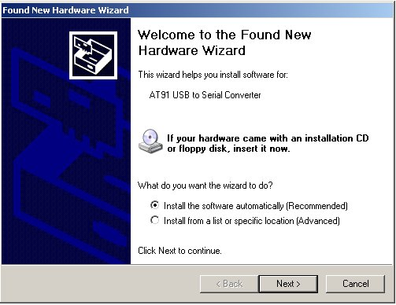
Press <Continue> to install.
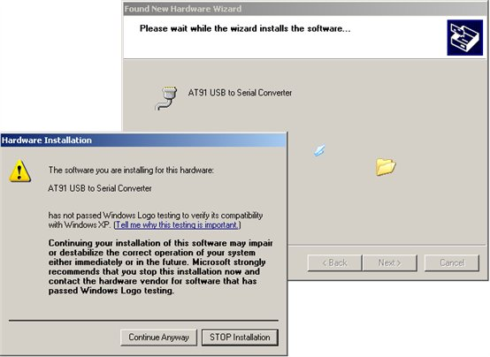
Press <Finish> to complete install.
Complete USB installation
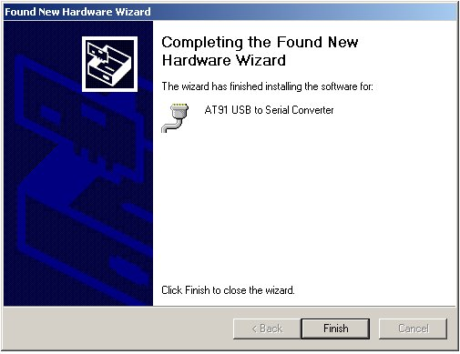
Case 2: I have installed SAM-BA 2.10 before, and the usb port is recognized as an “ATMEL AT91xxxxx Test Board” on Windows XP.
That means a previous version of USB driver (atm6124.sys) was already installed from previous versions of SAM-BA, you have to uninstall this driver first, or connect the board to another USB port on the computer where the board will not be detected.
To uninstall a previously installed driver on a USB port, you have to open the Windows Device Manager tool (the following steps are explained for Windows XP, but very similar for the other versions of the OS):
Connect the board to the computer via a USB port and power it up,
Control panel -> System -> 'Hardware' pane,
Expand the 'Universal Serial Bus controllers' folder,
Universal Serial Bus in Hardware Management
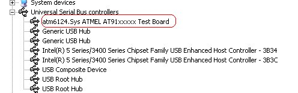
Right click on the 'atm6124.Sys ATMEL AT91xxxxx Test Board' entry,
Uninstall atm6124.sys
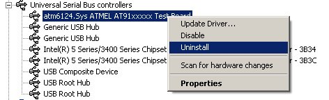
Choose <Uninstall> and confirm, (the entry disappears from the list)
Power the board off.
To install the USB CDC Serial driver
Power the board on.
The system finds a new hardware and asks you to search a new driver for it,
Choose to install from a list or specific location (Advanced), then <Next> button,
USB installation in special location
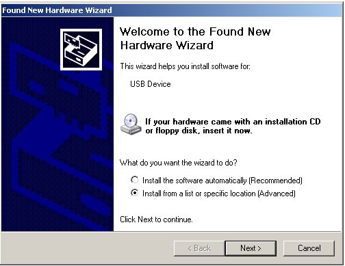
Select the folder for SAM-BA install location.
USB installation select location
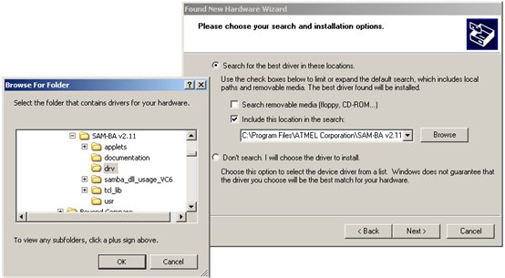
Press <Continue> to install.
USB installation start
Press <Finish> to complete install.
USB installation complete
IMPORTANT: If you change the USB port on which you connect the board, you will need to redo the installing procedure described above.
In the 'Device Manager' window, your board appears in the 'Ports (COM & LPT)' folder, with the 'virtual' COM port name indicated in parenthesis.
Ports (COM & LPT)
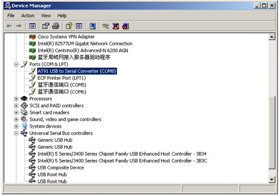
IMPORTANT: You just need to select “¥USBserial\COMxx“ when SAM-BA shows the 'Choose Connection' message box, because SAM-BA have converted this virtual COM port name to “usb\ARMX”.
The following steps are explained for Windows XP, but very similar for the other versions of the OS.
To uninstall a previously installed driver on a USB port, you have to open the Windows Device Manager tool (the following steps are explained for Windows XP, but very similar for the other versions of the OS):
Connect the board to the computer via a USB port and power it up,
Control panel -> System -> 'Hardware' pane,
Expand the Ports (COM&LPT)
Right click on the 'AT91 USB To Serial Converter (COMxx)' entry
Choose “uninstall” and confirm, (the entry disappears from the list)
Uninstall USB to Serial Converter Driver
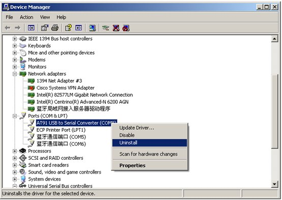
Power the board off.
To install the USB CDC Serial driver
Power the board on.
The system finds a new hardware and asks you to search a new driver for it,
Choose to install from a list or specific location (Advanced), then <Next> button,
USB installation automatically
Click on <Don't search, ...>, then <Next> button.
USB installation without search
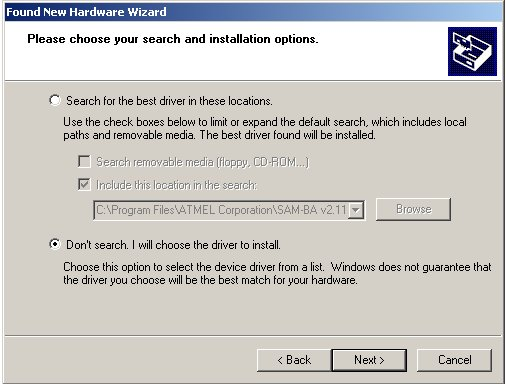
Select the Model: 'AT91 USB to Serial Converter' in the list and click <Next>,
Select ATMEL USB to Serial Converter
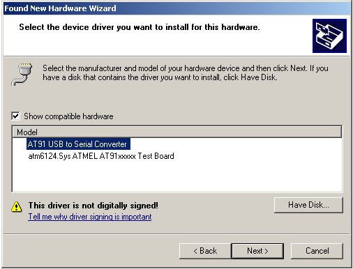
Press <Continue> to install.
USB installing
Press <Finish> to complete install.
USB installation Complete
Try the following steps to remove the inf completely and reinstall it again.
1. Use the Windows Explorer Search option and perform a search operation for "AT91 USB to Serial Converter" string in all the files located in the "c:\windows\inf" directory.
You may notice you can’t find this folder, it’s because it’s hidden folder. To view hidden folders, select Tools in the menu bar, >Folder Option > tab view > select hidden files button.
2. Go back to the above folder and it should now be viewable, within this folder you will find INF and PNF files. These are the device drivers that are being loaded when windows starts. Depending on when you installed the previous driver (atm6124.sys for example).
3. You can search and delete this corresponding INF and PNF files associated with the previous (or wrong) drivers installed.
4. The result will point on a file named "oemxxx.inf" where 'xxx' is a number which may differ from one computer to another.
This file should have a header similar to the below:
;
; WPUSBSERIAL.INF (for Windows 2000)
;
; Copyright (c) 2000, WondeProud? Technology Inc.
5. On the faulty computer's USB connector, plug the USB cable with the board powered on
6. Delete the "oemxxx.inf" file previously found
7. Open the "Device manager" in Control Panel -> System -> Hardware pane
8. In the "Ports (COM and LPT)" section there is a " AT91 USB to Serial Converter (COMxxx)" entry
9. Using a mouse right click on this entry, select “update driver…”, choose “Browse my computer for driver software” and install the new INF file “atm6124_cdc.inf” manually